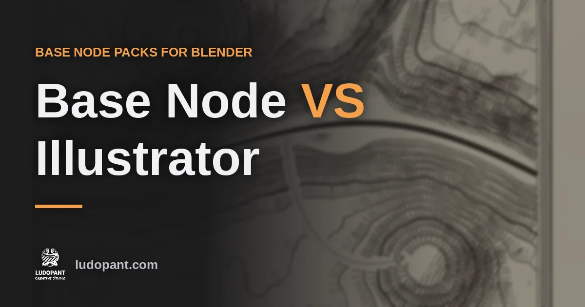

Products › Base Node Packs › VS › Illustrator
Base Node VS Illustrator

Adobe Illustrator, by Adobe. A vector graphics editor, sold by subscription. It saves .ai files and exports SVG and PDF.[1,2]
Base Node is a text language for Blender's node trees, with a free add-on and paid packs of tested node groups. Illustrator is a vector editor you draw in by hand. Ink & Engraving makes line art by rules instead, in Blender's Geometry Nodes: hatching, guilloché, halftone dots and living ink as Grease Pencil strokes, which Blender exports to SVG or PDF. It is not a vector editor.
Of the 8 capabilities below, Base Node covers 5, covers 2 in part and does not cover 1. The Illustrator side of each row was checked on Adobe's pages on 2026-11-20; the numbers link to them.
What Illustrator does, and how Base Node does it
| What Illustrator does | Illustrator | Base Node + pack | Status |
|---|---|---|---|
| Patterns and tilings | Pattern Options makes pattern swatches with grid, brick and hex tiles.[3] | Hexagonal and triangular grids, phyllotaxis spirals, jittered points and hatching, as geometry.
| Covered |
| Guilloché and engraving | We found no guilloché tool in Illustrator's tools reference; third-party plug-ins add engraving tools.[4,5] | Guilloché security patterns, cross-hatching for engraving, screentone halftone dots and Lehmann slope hachures.
| Covered |
| Halftone | Color Halftone is a raster effect: dots sized by brightness, with screen angles per channel.[6] | Halftone dots as vector geometry, sized by a field.
| Covered |
| Stroke width and brushes | The Width tool sets stroke widths along a path; calligraphic brushes follow tablet pressure, tilt and rotation.[7,8] | Stroke radius by rules, tapered ends, wobble, bleed and a double stroke for living ink, and write-on. No tablet pressure.
| Partial |
| Art along a path | Art brushes stretch art along a path; Envelope Distort bends art to a shape.[8,9] | Flow along a curve by its moving frame, ribbon outlines and arrowheads.
| Covered |
| Corners and offsets | Live Corners round or chamfer corners; Offset Path copies a path at a distance.[10,11] | Fillets, resampling, curvature and path operations on 2D curves.
| Covered |
| SVG and PDF out | Illustrator exports SVG and saves PDF-compatible files.[2,12,13] | Blender exports Grease Pencil strokes to SVG and PDF. No CMYK. | Partial |
| Image Trace | Image Trace turns a raster image into vector paths.[14] | None. | Not covered |
Where Illustrator is ahead
- The Pen and Direct Selection tools draw and edit anchors and handles by hand.[15]
- Typography, with type on a path.[16]
- A CMYK document mode for print.[17]
- Recolor Artwork changes a whole palette at once.[18]
- Up to 1,000 artboards in a document, exported as assets for screens.[19]
- A third-party plug-in ecosystem extends the tool set.[5]
When to choose which
Choose Illustrator when
You draw and lay out by hand: the Pen tool, type, CMYK print work, artboards, Image Trace and many plug-ins.
Choose Base Node when
You want engraving, guilloché and hatching made by rules over a 3D scene or a map, animated, and redrawn when the shape changes.
The packs
- Ink & EngravingLiving ink, hatching and guilloché for Geometry Nodes and Grease Pencil.
Sources
- https://www.adobe.com/products/illustrator/pricing-info.html
- https://helpx.adobe.com/illustrator/using/exporting-artwork.html
- https://helpx.adobe.com/illustrator/desktop/paint-and-fill/create-and-edit-patterns/edit-patterns.html
- https://helpx.adobe.com/illustrator/desktop/get-started/learn-the-basics/illustrator-tools-reference.html
- https://helpx.adobe.com/illustrator/plug-ins.html
- https://helpx.adobe.com/illustrator/desktop/special-effects-styles/apply-filter-effects/raster-effects-reference.html
- https://helpx.adobe.com/illustrator/using/tool-techniques/width-tool.html
- https://helpx.adobe.com/illustrator/using/brushes.html
- https://helpx.adobe.com/illustrator/desktop/manage-objects/reshape-transform-objects/distort-objects-with-envelopes.html
- https://helpx.adobe.com/illustrator/desktop/draw-shapes-and-paths/modify-live-shapes/live-shape-properties.html
- https://helpx.adobe.com/illustrator/desktop/manage-objects/edit-objects/offset-duplicate-objects.html
- https://docs.blender.org/manual/en/latest/files/import_export/grease_pencil_svg.html
- https://docs.blender.org/manual/en/latest/files/import_export/grease_pencil_pdf.html
- https://helpx.adobe.com/illustrator/desktop/manage-objects/traces-mockups-symbols/trace-images-to-convert-raster-into-vector-artwork.html
- https://helpx.adobe.com/illustrator/desktop/draw-shapes-and-paths/draw-shapes/draw-line-segments-with-the-pen-tool.html
- https://helpx.adobe.com/illustrator/desktop/design-with-text/edit-format-text/create-type-on-a-path.html
- https://helpx.adobe.com/illustrator/using/adjusting-colors.html
- https://helpx.adobe.com/illustrator/using/recolor-artwork.html
- https://helpx.adobe.com/illustrator/using/using-multiple-artboards.html
Adobe Illustrator is a trademark of Adobe, or of its owner. Other product names are trademarks of their owners. Ludopant and Base Node are not affiliated with or endorsed by them; the names are used only to compare. All comparisons.